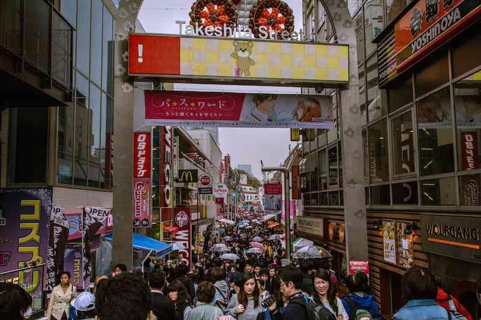
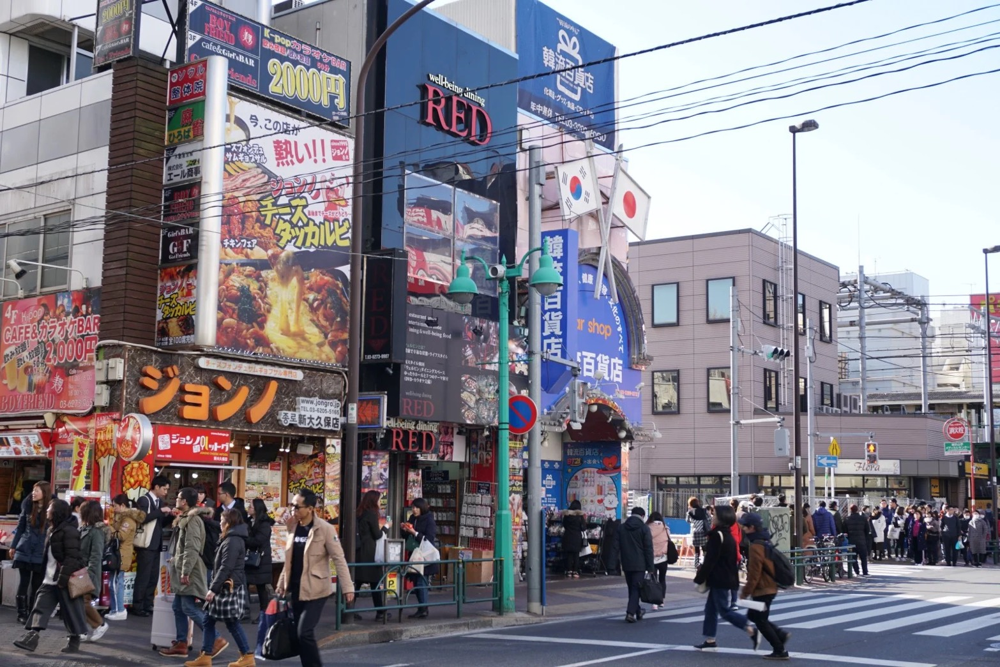
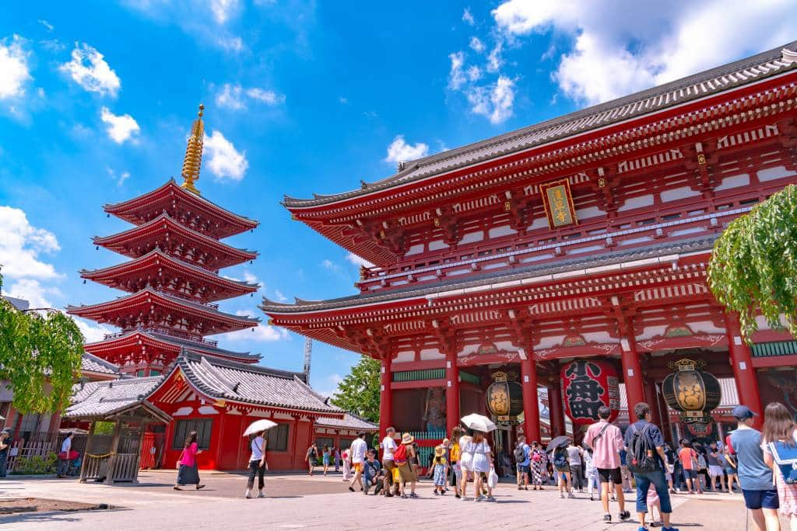
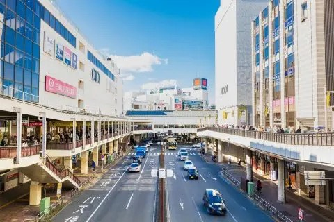

Harajuku is the pretty place which has all trending foods and spots. The street called Takeshita street is the most popular place and it has bunch of cute foods and outfits and everything! Personally, there are Brandy Mellville, my favorite clothing store is there. And only one in Japan!
Shinookubo is the city whose theme is Korea!! If you like Korean culture, you should go there! There are a=many Korean culture restaurants and they are really good! You can get Korean makeup and photobooth too!
Asakusa is really a Japan-style city! If you really like a Japanese culture, you will love here! There are many temples and shrines and you can get dressing up in Kimono, which is a Japanese style dress! You can also get good souveniors for Japan and a lot of delicious foods!!
Machida is my hometown!! This is not that popular places as 3 cities above, but there are big shopping malls and you can get basically everything. There are many delicious restaurants and I personally like the restaurant called "Kapuri-cho-za" This is a italian style restaurant and they have a salmon egg pasta. Here's less busy than other places!!
